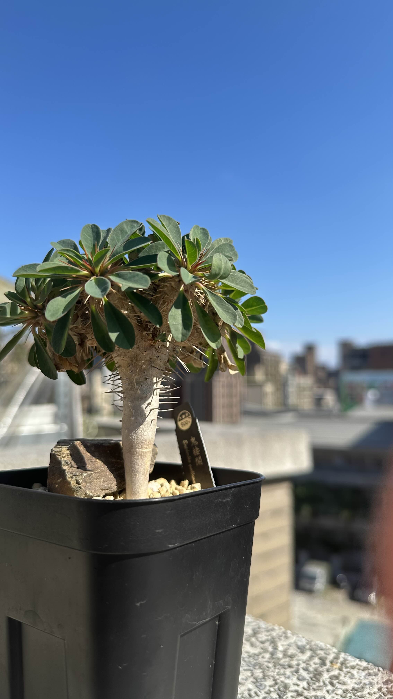

PLANT FIELD PAGE
Euphorbia guillauminiana
從一則一則的觀察，留下它在家中生長的時間。

原生範圍
馬達加斯加 Analalava。
生活型
半多肉亞灌木或灌木。
具體棲地
Kew 將其主要生物群系列為沙漠或乾燥灌叢；這是物種資料，不是本株栽培地的描述。
這株目前可見
鬼棲閣的學名是 Euphorbia guillauminiana，屬於大戟科、大戟屬。依 Kew 的分類資料，它原生於馬達加斯加 Analalava，生活型是半多肉亞灌木或灌木，主要生長於沙漠或乾燥灌叢生物群系。
這張入秋的紀錄照裡，灰褐色的粗莖向上分枝，莖與枝條上可見尖刺，綠色葉片聚集在枝端。這些是照片可見的本株特徵；是否需要換盆、明年是否長出新分枝，留給後續觀察。
完整
植物：鬼淒閣 記錄的當下是入秋的時候。我原本打算明年幫它換盆，但感覺它的長勢還不錯，所以明年不用換盆了，就繼續觀察，看它明年會不會分頭出來。